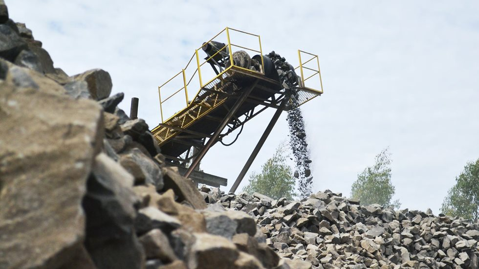

É utilizado para tratar o material fisicamente e deixa-lo em melhor estado para tratamentos subsequentes. Separa previamente metais, materiais poliméricos e cerâmicos. Um dos tratamentos usados é a cominuição para reduzir o tamanho das partículas.
